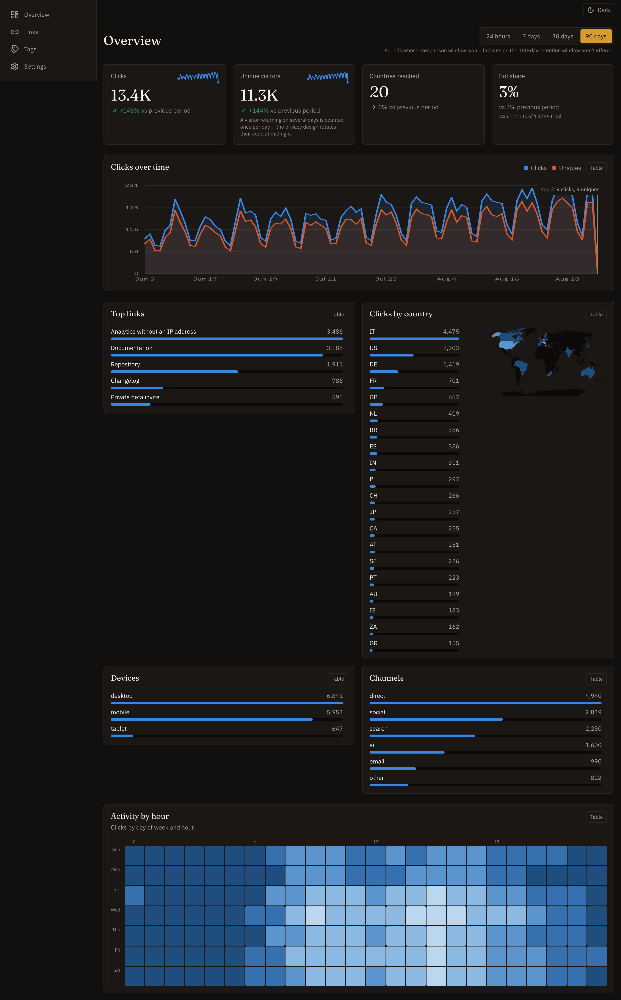
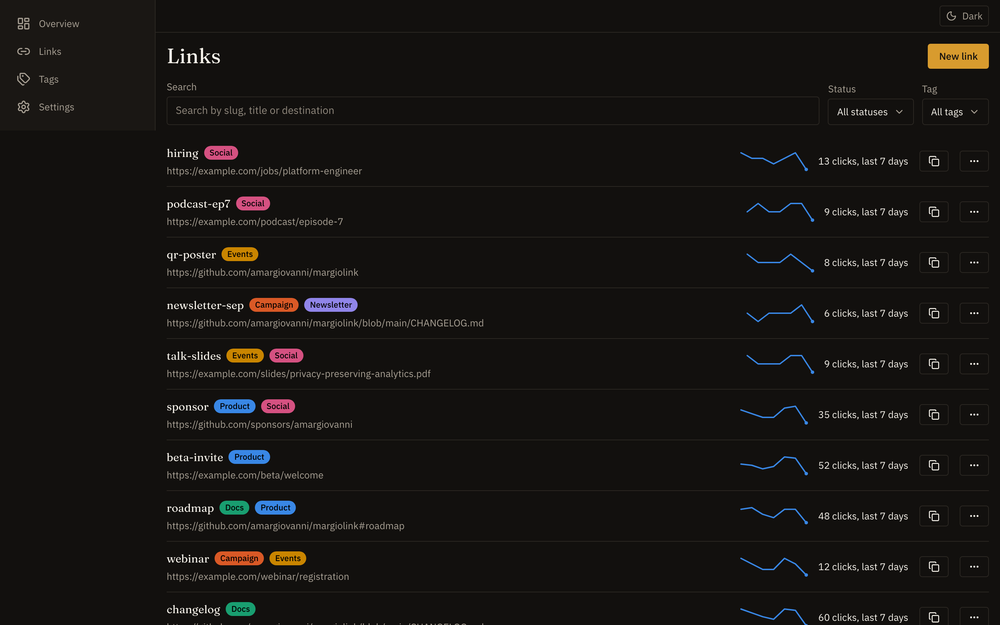
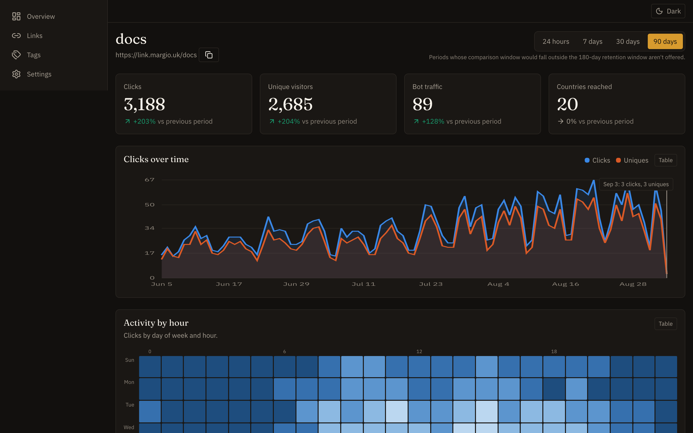

Links that behave
Custom or generated slugs, a password gate, an expiry with its own destination, an off switch, tags, and a soft delete you can undo.
MargioLink is a URL shortener with the analytics you actually wanted — country, city, device, browser, channel, campaign, hour of the day — and none of the surveillance you didn't. No IP address is stored, in any form. No tracking cookie is set. No visitor can be followed from one day into the next, by us or by anyone who takes the database.

The record
Both columns are enforced by the schema and by tests, not by a promise in a footer. The right-hand column is the interesting one: those fields do not exist in the database, so there is nothing to leak, subpoena, or change our minds about later.
Fifteen dimensions, all of them about the request.
No column exists for any of these.
The rotation
To tell two visitors apart without knowing either of them, MargioLink derives a short code from the request, keyed to today's date. The key changes at midnight UTC and the old one is never kept, so the same person arriving tomorrow is a stranger again.
That is the whole trick, and it is also the whole limit: unique visitors are counted per day and never across days, because the design that protects the visitor is the same design that refuses to answer the question.
Rotates at 00:00 UTC
The dashboard
Served by the same Worker at /app. Type, icons and the map's own topology
all ship in the build, so the dashboard makes no request to anyone else either. Every
chart has a table view, every control is keyboard-operable, and the whole thing is
built to WCAG 2.2 AA.


What it does
Custom or generated slugs, a password gate, an expiry with its own destination, an off switch, tags, and a soft delete you can undo.
One D1 lookup at the edge, then a 302. Recording the click happens after the response is on its way, so measurement never costs the visitor a millisecond.
Country, city, device, OS, browser, language, network, referrer, channel, three UTM fields, weekday × hour, scan-or-click, and outcome.
Download as SVG or PNG. A scan carries its own marker, so the poster and the newsletter never end up in the same bucket.
CSV straight from the dashboard, a documented JSON API, and a database you own. Nothing here is a hostage.
Hourly rollups, a nightly job that deletes raw rows past the retention window, and aggregates that identify nobody kept after.
Run your own
There is no hosted version to sign up for and no plan to outgrow. You deploy it, you hold the database, and on Cloudflare's free tier a personal or small-team shortener costs nothing to run.
# clone, install, create the database
$ git clone https://github.com/amargiovanni/margiolink
$ cd margiolink && npm ci
$ npx wrangler d1 create margiolink
# put the id in wrangler.jsonc, then
$ npm run db:migrate
$ npx wrangler secret put HASH_SECRET
$ npm run deployPoint a hostname at the Worker as a custom domain and wrangler creates the DNS record and the certificate for you.
An admin username and password, and a hashing secret of at least 32 characters. A missing hashing secret fails closed — the redirect refuses rather than quietly recording reproducible visitor codes.
npm run db:seed:demo fills a local database with six months of
plausible traffic, so you can see every chart working before your first real
click.
Migrations are reversible and verified in CI, so pulling a new version is a
git pull and a deploy rather than an evening.
Free, and open
The whole backend is a few thousand lines of TypeScript with no ORM, no framework beyond a router, and no service to sign up for. The privacy notice, the data map, the legal basis and the accessibility sweep are all in the repository, versioned with the code that has to honour them — because a privacy claim you cannot check is just marketing.